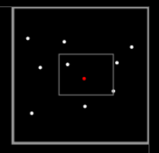
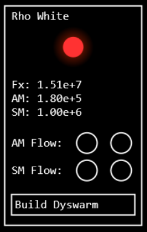
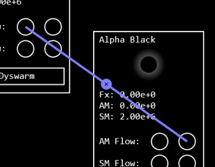

The universe is running out of power! Many generations of stars have used up most of the fusable elements
and the expansion of space itself has pushed all but the closest systems out of reach forever. Only a handful
of cold Red Dwarfs are still putting out usable energy. The only solution is to restart the universe!
In order to do that you will need to gather enough resources in the main system (named Alpha Black) to build
the Q-Pinch; the device that will trigger the universe to restart and consume the old matter in the process.
If you fail to build this device, the universe is doomed to suffer a slow and drawn-out Heat Death.
 You can navigate around by clicking and holding empty space between systems and then dragging the view. In the upper right corner of the view there is a minimap. The minimap shows the system as white dots, while the main system is a red dot. The smaller rectangle shows how the viewport relates to the overall space and how much margin in each direction you have for navigation.

Each system, except the main one, has a variable and hidden amount of fuel left. The star of the system puts
out energy, which is indicated by the Flux (Fx). As the amount of fuel decreases, so does the Flux, until no
fuel is left and the star goes out. As long as there is Flux left, this energy can be stored as Anti-Matter (AM).
In order to create AM you will need to construct a Dyswarm in the system. The creation of the Dyswarm takes AM
and Solid Matter (SM) itself, so you will need to get resources to the system first (see Flow Lines). The building
costs for a Dyswarm are 1e5 AM and 1e6 SM.
The building costs for the Q-Pinch are ???

In order to get AM and SM from system to system you can construct Flow Lines. The Flow Lines itself don't cost
anything, but transport does. Transporting AM first tries to use some of the system's Flux and, if it is not
sufficient, takes some of the AM to be transported. Transport by Flux is cheaper overall, but obviously not
possible when the star has run out of fuel. Transport of SM always requires some AM.
Each system has two sets of inflow and outflow sockets. To place a new Flow Line, click the outflow socket (the
right one) of a system and then click the inflow socket of the target system. You can remove an existing Flow
Line by clicking the little X placed at the mid-point of the line.
The distance of a Flow Line also effects how much the transport costs. It can be cheaper to first transport AM/SM
to a system closer to the main system. However keep in my mind that you then pay twice the transport cost, so only
use this method to avoid very long Flow Lines.